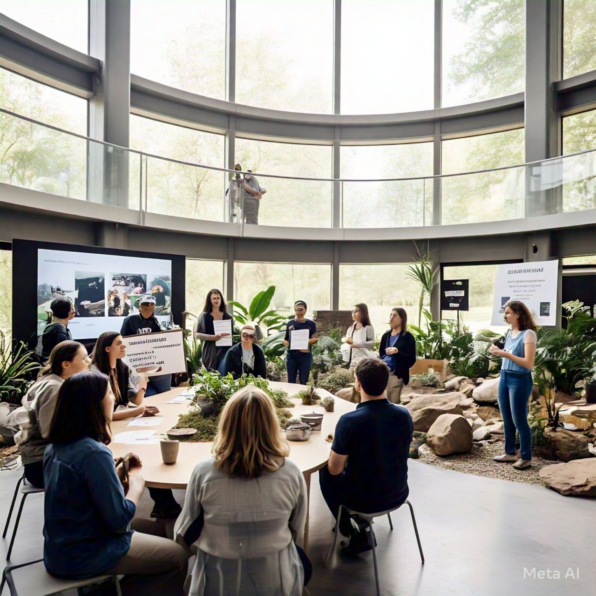
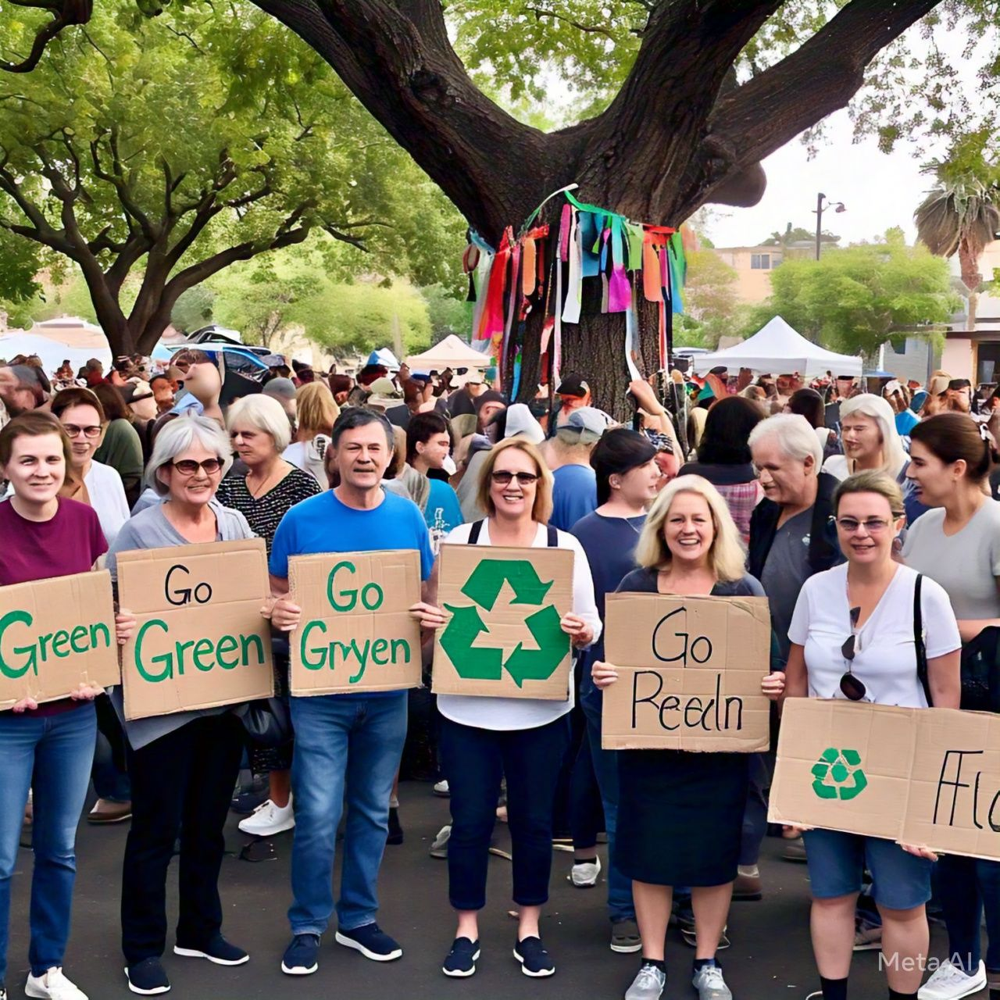
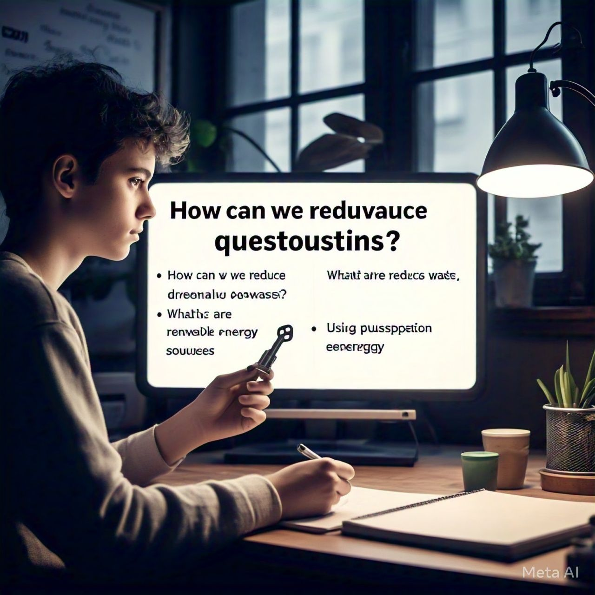

Fases del proyecto: La planificación del proyecto incluye tres fases: actividades previas, desarrollo y concreción. Estas fases cubren desde la creación de un grupo de trabajo hasta la evaluación de las estrategias implementadas.

Recursos necesarios: Se requieren recursos materiales como folletos y contenedores; tecnológicos, como software educativo; financieros para desarrollar programas y humanos, como voluntarios y especialistas.
Tareas específicas: Incluyen identificar problemas de gestión de residuos, diseñar programas educativos y supervisar sistemas. Todo esto busca mejorar la conciencia ambiental en la comunidad.

Preguntas clave: Reflexiona sobre cuál recurso es más importante, por qué definir los recursos es crucial y las ventajas de usar un diagrama de flujo en los procesos del proyecto.
